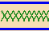

Displaying the "Do not Care" state
Vectors which are identified as X (Do not Care) in the Pattern Tool, are also represented as an X in the Timing Diagram. Similarly, if you mask out a pin in the Pattern Tool, then the information for that pin in the Timing Diagram appears as a row of X's:

Functional changes
- Introduced before SmarTest 6.3.2